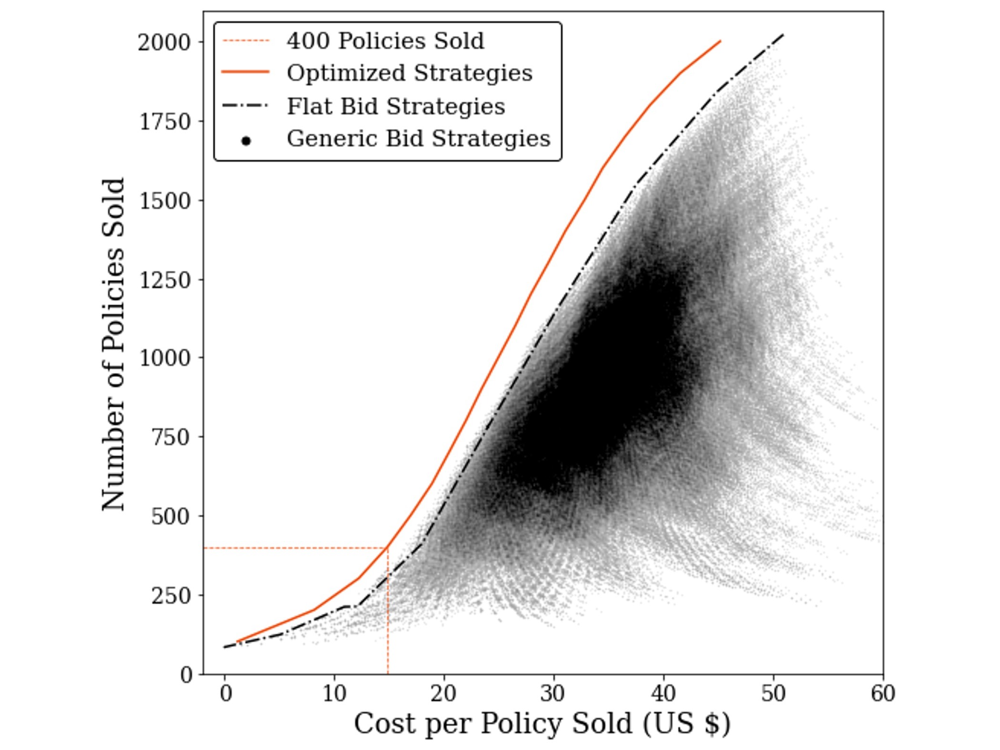
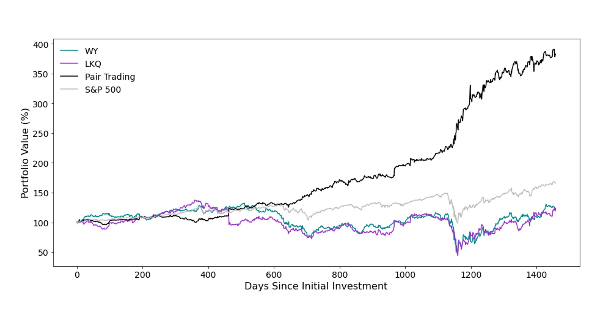
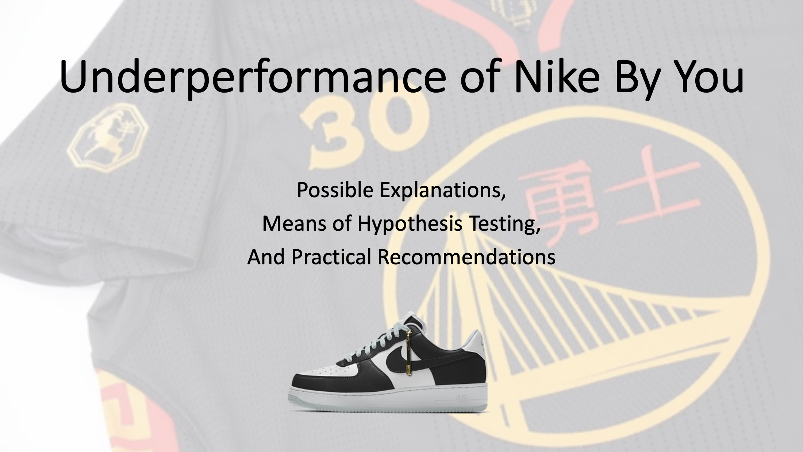
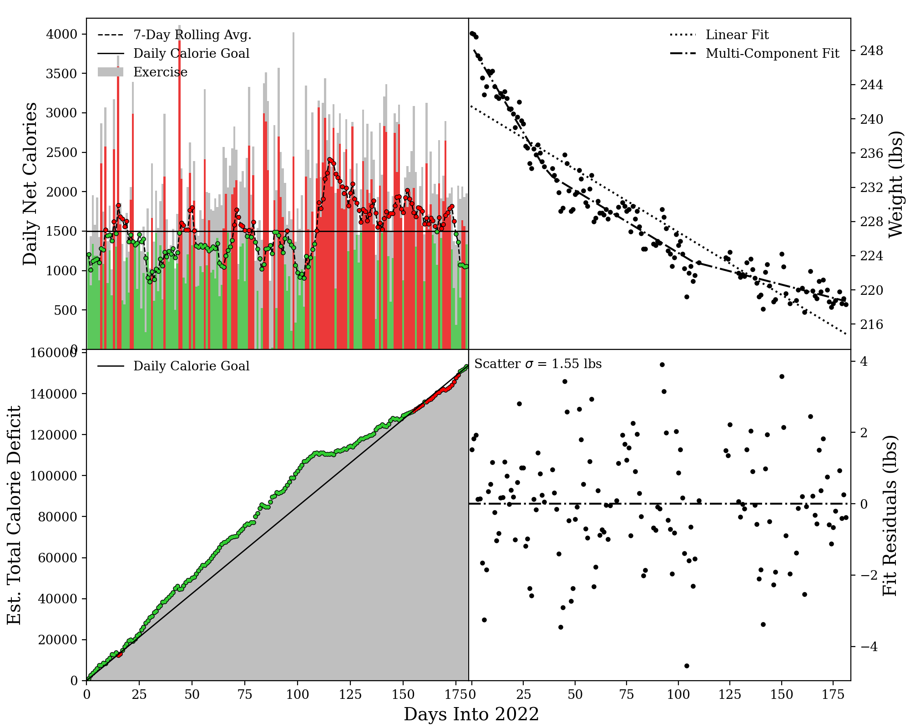
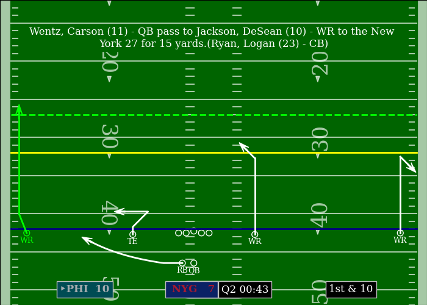

Patrick J. Vallely
Side Project Portfolio
Fully Worked Business Cases

Root Insurance Challenge
Optimizing ad spending in a hypothetical vertical search website.

Pair Trading Challenge
Utilizing machine learning to build an investment portfolio by identifying stocks that pair trade.

Hypothetical Nike Consultation
Addressing unexpected Nike By You sales shortfalls.
Data Visualization

Weight Loss Analyzer
Analyzing personal weight loss through the first half of 2022.


F1 Social Media Following
Visualizing social media gains made by F1 drivers throughout the 2022 season.